8.7 Mehr über Unentscheidbarkeit: Das Postsche Korrespondenzproblem./course1/wly/08/07-Post-correspondence-problem.wly:2:11
8.7 Mehr über Unentscheidbarkeit: Das Postsche Korrespondenzproblem./course1/wly/08/07-Post-correspondence-problem.wly:2:11
Die Unentscheidbarkeit des Halteproblems mag auf den./course1/wly/08/07-Post-correspondence-problem.wly:4:5 ersten Blick esoterisch anmuten. Es taucht ja nur auf, weil./course1/wly/08/07-Post-correspondence-problem.wly:5:5 die Problemstellung irgendwie selbstreferenziell ist. Das./course1/wly/08/07-Post-correspondence-problem.wly:6:5 täuscht: Unentscheidbarkeit taucht in vielen Bereichen der./course1/wly/08/07-Post-correspondence-problem.wly:7:5 theoretischen Informatik und der Mathematik auf, auch bei./course1/wly/08/07-Post-correspondence-problem.wly:8:5 Fragestellungen, die auf den ersten Blick nichts mit./course1/wly/08/07-Post-correspondence-problem.wly:9:5 Turingmaschinen zu tun haben und völlig harmlos wirken. Wie./course1/wly/08/07-Post-correspondence-problem.wly:10:5 zum Beispiel das rein kombinatorische ./course1/wly/08/07-Post-correspondence-problem.wly:11:5Postsche./course1/wly/08/07-Post-correspondence-problem.wly:11:44 Korrespondenzproblem../course1/wly/08/07-Post-correspondence-problem.wly:12:5 Im Postschen Korrespondenzproblem./course1/wly/08/07-Post-correspondence-problem.wly:12:27 haben wir endlich viele Kärtchen (auch ./course1/wly/08/07-Post-correspondence-problem.wly:13:5Kacheln./course1/wly/08/07-Post-correspondence-problem.wly:13:45 genannt)./course1/wly/08/07-Post-correspondence-problem.wly:13:53 gegeben, die oben und unten jeweils ein Wort haben. Wir./course1/wly/08/07-Post-correspondence-problem.wly:14:5 müssen die Kärtchen so nebeneinander legen, dass oben und./course1/wly/08/07-Post-correspondence-problem.wly:15:5 unten das gleiche Wort entsteht; jedes Kärtchen kann./course1/wly/08/07-Post-correspondence-problem.wly:16:5 beliebig oft verwendet werden. Im folgenden Beispiel wird./course1/wly/08/07-Post-correspondence-problem.wly:17:5 das beige-farbene Kärtchen zweimal verwendet:./course1/wly/08/07-Post-correspondence-problem.wly:18:5
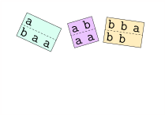
course1/public/img/pcp/example-wikipedia/01.svg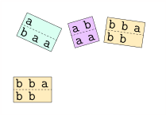
course1/public/img/pcp/example-wikipedia/02.svg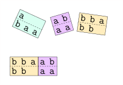
course1/public/img/pcp/example-wikipedia/03.svg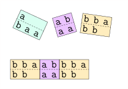
course1/public/img/pcp/example-wikipedia/04.svg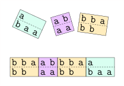
course1/public/img/pcp/example-wikipedia/05.svg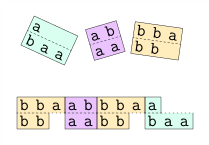
course1/public/img/pcp/example-wikipedia/06.svg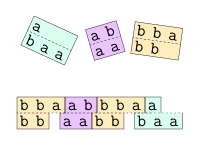
course1/public/img/pcp/example-wikipedia/07.svg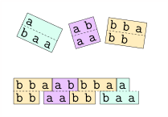
course1/public/img/pcp/example-wikipedia/08.svg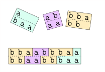
course1/public/img/pcp/example-wikipedia/09.svg(Diese Beispielinstanz ist von./course1/wly/08/07-Post-correspondence-problem.wly:32:5 ./course1/wly/08/07-Post-correspondence-problem.wly:33:5Wikipedia./course1/wly/08/07-Post-correspondence-problem.wly:33:6;./course1/wly/08/07-Post-correspondence-problem.wly:33:75 die graphische Darstellung stammt von mir.) Schauen wir uns./course1/wly/08/07-Post-correspondence-problem.wly:34:5 ein weiteres, komplizierteres Beispiel an. Hier führen wir./course1/wly/08/07-Post-correspondence-problem.wly:35:5 eine Sonderregel ein, nämlich dass man mit der türkisen./course1/wly/08/07-Post-correspondence-problem.wly:36:5 Kachel (der ersten) anfangen muss:./course1/wly/08/07-Post-correspondence-problem.wly:37:5
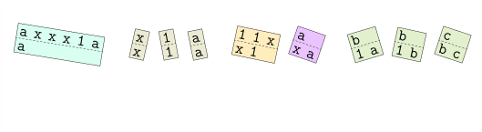
course1/public/img/pcp/example-expo/01.svg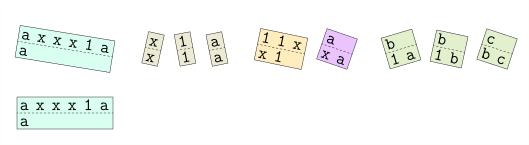
course1/public/img/pcp/example-expo/02.svg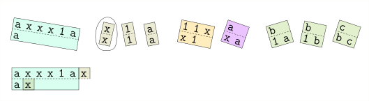
course1/public/img/pcp/example-expo/04.svg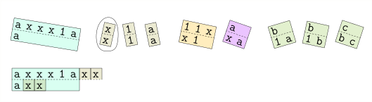
course1/public/img/pcp/example-expo/05.svg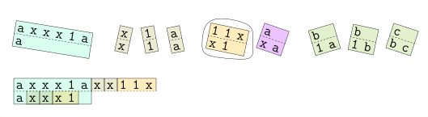
course1/public/img/pcp/example-expo/07.svg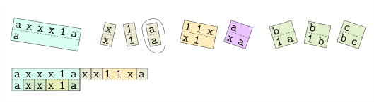
course1/public/img/pcp/example-expo/09.svg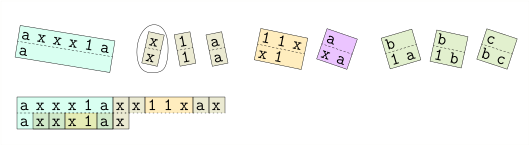
course1/public/img/pcp/example-expo/11.svg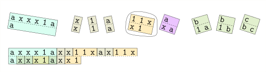
course1/public/img/pcp/example-expo/13.svg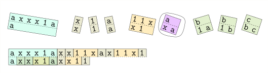
course1/public/img/pcp/example-expo/16.svg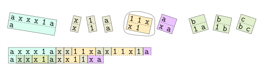
course1/public/img/pcp/example-expo/18.svg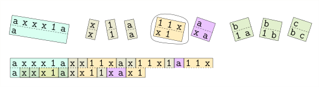
course1/public/img/pcp/example-expo/19.svg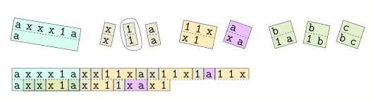
course1/public/img/pcp/example-expo/20.svg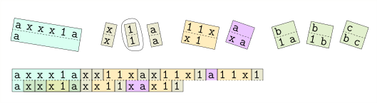
course1/public/img/pcp/example-expo/21.svg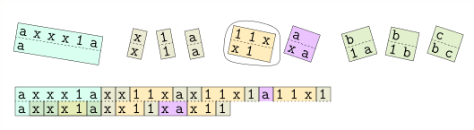
course1/public/img/pcp/example-expo/22.svg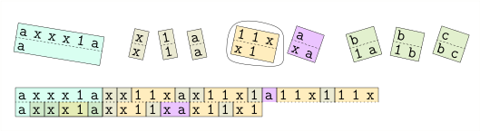
course1/public/img/pcp/example-expo/23.svg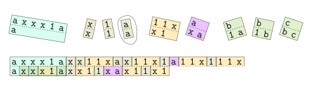
course1/public/img/pcp/example-expo/24.svg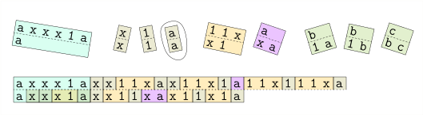
course1/public/img/pcp/example-expo/25.svgKönnen Sie das zweie PCP-Puzzle lösen und zu Ende führen?./course1/wly/08/07-Post-correspondence-problem.wly:67:5 Informell sehen wir bereits: um das Puzzle zu lösen, müssen./course1/wly/08/07-Post-correspondence-problem.wly:68:5 wir die ./course1/wly/08/07-Post-correspondence-problem.wly:69:5$\texttt{x}$./course1/wly/08/07-Post-correspondence-problem.wly:69:13 loswerden. Das geht nur, indem wir./course1/wly/08/07-Post-correspondence-problem.wly:69:25 jedes ./course1/wly/08/07-Post-correspondence-problem.wly:70:5$\texttt{x}$./course1/wly/08/07-Post-correspondence-problem.wly:70:11 mit Hilfe des fünften (beigefarbenen)./course1/wly/08/07-Post-correspondence-problem.wly:70:23 Kärtchens nach rechts schieben, bis es auf ein ./course1/wly/08/07-Post-correspondence-problem.wly:71:5$\texttt{a}$./course1/wly/08/07-Post-correspondence-problem.wly:71:52 ./course1/wly/08/07-Post-correspondence-problem.wly:71:64 stösst, wo wir es mit dem sechsten (violetten) verschwinden./course1/wly/08/07-Post-correspondence-problem.wly:72:5 lassen können. Jedes ./course1/wly/08/07-Post-correspondence-problem.wly:73:5$\texttt{x}$./course1/wly/08/07-Post-correspondence-problem.wly:73:26 verdoppelt also die./course1/wly/08/07-Post-correspondence-problem.wly:73:38 Anzahl der Einsen. Dieses PCP "berechnet" in gewisser Weise./course1/wly/08/07-Post-correspondence-problem.wly:74:5 die Funktion ./course1/wly/08/07-Post-correspondence-problem.wly:75:5$n \mapsto 2^n$./course1/wly/08/07-Post-correspondence-problem.wly:75:18../course1/wly/08/07-Post-correspondence-problem.wly:75:33 In ganz ähnlicher Weise./course1/wly/08/07-Post-correspondence-problem.wly:75:33 können wir zu jeder Turingmaschine ein PCP-Puzzle bauen,./course1/wly/08/07-Post-correspondence-problem.wly:76:5 das diese Maschine "simuliert". Aber eins nach dem anderen../course1/wly/08/07-Post-correspondence-problem.wly:77:5 Wir beginnen mit Terminologie../course1/wly/08/07-Post-correspondence-problem.wly:78:5
Definition 8.7.1./course1/wly/08/07-Post-correspondence-problem.wly:80:5 ./course1/wly/08/07-Post-correspondence-problem.wly:80:5 Sei ./course1/wly/08/07-Post-correspondence-problem.wly:81:9$\Sigma$./course1/wly/08/07-Post-correspondence-problem.wly:81:13 ein endliches Alphabet../course1/wly/08/07-Post-correspondence-problem.wly:81:21
Eine ./course1/wly/08/07-Post-correspondence-problem.wly:85:17Kachel./course1/wly/08/07-Post-correspondence-problem.wly:85:23 (auch ./course1/wly/08/07-Post-correspondence-problem.wly:85:30Kärtchen./course1/wly/08/07-Post-correspondence-problem.wly:85:38 genannt) ist ein Paar./course1/wly/08/07-Post-correspondence-problem.wly:85:47 ./course1/wly/08/07-Post-correspondence-problem.wly:86:17$(\alpha : \beta) \in \Sigma^* \times \Sigma^*$./course1/wly/08/07-Post-correspondence-problem.wly:86:17../course1/wly/08/07-Post-correspondence-problem.wly:86:64 Hier./course1/wly/08/07-Post-correspondence-problem.wly:86:64 bezeichnet ./course1/wly/08/07-Post-correspondence-problem.wly:87:17$\alpha$./course1/wly/08/07-Post-correspondence-problem.wly:87:28 das Wort auf der oberen Hälfte der./course1/wly/08/07-Post-correspondence-problem.wly:87:36 Kachel und ./course1/wly/08/07-Post-correspondence-problem.wly:88:17$\beta$./course1/wly/08/07-Post-correspondence-problem.wly:88:28 das auf der unteren../course1/wly/08/07-Post-correspondence-problem.wly:88:35
Ein PCP-Puzzle (oder einfach nur Puzzle in diesem./course1/wly/08/07-Post-correspondence-problem.wly:91:17 Zusammenhang) ist eine endliche Menge ./course1/wly/08/07-Post-correspondence-problem.wly:92:17$S$./course1/wly/08/07-Post-correspondence-problem.wly:92:55 von Kacheln../course1/wly/08/07-Post-correspondence-problem.wly:92:58
Eine Kachelung ist eine Folge ./course1/wly/08/07-Post-correspondence-problem.wly:95:17$s$./course1/wly/08/07-Post-correspondence-problem.wly:95:47 von Kacheln aus ./course1/wly/08/07-Post-correspondence-problem.wly:95:50$S$./course1/wly/08/07-Post-correspondence-problem.wly:95:67,./course1/wly/08/07-Post-correspondence-problem.wly:95:70 ./course1/wly/08/07-Post-correspondence-problem.wly:95:70 also./course1/wly/08/07-Post-correspondence-problem.wly:96:17
Für eine Kachelung ./course1/wly/08/07-Post-correspondence-problem.wly:103:17$s$./course1/wly/08/07-Post-correspondence-problem.wly:103:36 definieren wir den ./course1/wly/08/07-Post-correspondence-problem.wly:103:39oberen Teil./course1/wly/08/07-Post-correspondence-problem.wly:103:60 ./course1/wly/08/07-Post-correspondence-problem.wly:103:72 ./course1/wly/08/07-Post-correspondence-problem.wly:104:17$\top(s)$./course1/wly/08/07-Post-correspondence-problem.wly:104:17 und den ./course1/wly/08/07-Post-correspondence-problem.wly:104:26unteren Teil./course1/wly/08/07-Post-correspondence-problem.wly:104:36 ./course1/wly/08/07-Post-correspondence-problem.wly:104:49$\bottom(s)$./course1/wly/08/07-Post-correspondence-problem.wly:104:50:./course1/wly/08/07-Post-correspondence-problem.wly:104:62
Eine Kachelung ./course1/wly/08/07-Post-correspondence-problem.wly:112:17$s$./course1/wly/08/07-Post-correspondence-problem.wly:112:32 ist eine ./course1/wly/08/07-Post-correspondence-problem.wly:112:35Lösung./course1/wly/08/07-Post-correspondence-problem.wly:112:46 des Puzzles, wenn./course1/wly/08/07-Post-correspondence-problem.wly:112:53 ./course1/wly/08/07-Post-correspondence-problem.wly:113:17$\top(s) = \bottom(s)$./course1/wly/08/07-Post-correspondence-problem.wly:113:17 gilt../course1/wly/08/07-Post-correspondence-problem.wly:113:39
Illustrieren wir die Definitionen noch einmal anhand des./course1/wly/08/07-Post-correspondence-problem.wly:115:5 ersten Beispiels:./course1/wly/08/07-Post-correspondence-problem.wly:116:5
Das Puzzle besteht aus drei Kacheln:./course1/wly/08/07-Post-correspondence-problem.wly:123:5
Oben sehen wir eine Kachelung ./course1/wly/08/07-Post-correspondence-problem.wly:131:5$s := k_3 k_2 k_3$./course1/wly/08/07-Post-correspondence-problem.wly:131:35 und./course1/wly/08/07-Post-correspondence-problem.wly:131:53
Die Kachelung ./course1/wly/08/07-Post-correspondence-problem.wly:138:5$k_3 k_2 k_3$./course1/wly/08/07-Post-correspondence-problem.wly:138:19 ist noch keine Lösung, aber./course1/wly/08/07-Post-correspondence-problem.wly:138:32 ./course1/wly/08/07-Post-correspondence-problem.wly:139:5$k_3 k_2 k_3 k_1$./course1/wly/08/07-Post-correspondence-problem.wly:139:5 ist eine. Für ein festes ./course1/wly/08/07-Post-correspondence-problem.wly:139:22$\Sigma$./course1/wly/08/07-Post-correspondence-problem.wly:139:48 können./course1/wly/08/07-Post-correspondence-problem.wly:139:56 wir natürlich ein PCP-Puzzle codieren, indem wir die Menge./course1/wly/08/07-Post-correspondence-problem.wly:140:5 ./course1/wly/08/07-Post-correspondence-problem.wly:141:5$S$./course1/wly/08/07-Post-correspondence-problem.wly:141:5 der Kacheln codieren, z.B. über dem Alphabet./course1/wly/08/07-Post-correspondence-problem.wly:141:8 ./course1/wly/08/07-Post-correspondence-problem.wly:142:5$\Sigma \cup \{(, :, )\}$./course1/wly/08/07-Post-correspondence-problem.wly:142:5../course1/wly/08/07-Post-correspondence-problem.wly:142:30 Das erste Beispielpuzzle ./course1/wly/08/07-Post-correspondence-problem.wly:142:30$S$./course1/wly/08/07-Post-correspondence-problem.wly:142:57 ./course1/wly/08/07-Post-correspondence-problem.wly:142:60 wäre dann./course1/wly/08/07-Post-correspondence-problem.wly:143:5
Somit können wir das Postsche Korrespondenzproblem formal./course1/wly/08/07-Post-correspondence-problem.wly:149:5 als Sprache definieren:./course1/wly/08/07-Post-correspondence-problem.wly:150:5
Theorem 8.7.2./course1/wly/08/07-Post-correspondence-problem.wly:156:5 ./course1/wly/08/07-Post-correspondence-problem.wly:156:5 PCP ist unentscheidbar../course1/wly/08/07-Post-correspondence-problem.wly:157:9
Beweis Wir zeigen: wenn PCP entscheidbar ./course1/wly/08/07-Post-correspondence-problem.wly:160:9wäre./course1/wly/08/07-Post-correspondence-problem.wly:160:44,./course1/wly/08/07-Post-correspondence-problem.wly:160:49 dann ./course1/wly/08/07-Post-correspondence-problem.wly:160:49wäre./course1/wly/08/07-Post-correspondence-problem.wly:160:57 auch./course1/wly/08/07-Post-correspondence-problem.wly:160:62 ./course1/wly/08/07-Post-correspondence-problem.wly:161:9$\halt$./course1/wly/08/07-Post-correspondence-problem.wly:161:9 entscheidbar. Da letzteres jedoch unentscheidbar./course1/wly/08/07-Post-correspondence-problem.wly:161:16 ist, muss auch PCP unentscheidbar sein. Mehr im Detail: für./course1/wly/08/07-Post-correspondence-problem.wly:162:9 eine Turingmaschine ./course1/wly/08/07-Post-correspondence-problem.wly:163:9$M$./course1/wly/08/07-Post-correspondence-problem.wly:163:29 und ein Eingabewort ./course1/wly/08/07-Post-correspondence-problem.wly:163:32$x$./course1/wly/08/07-Post-correspondence-problem.wly:163:53 ./course1/wly/08/07-Post-correspondence-problem.wly:163:56 konstruieren wir ein Puzzle ./course1/wly/08/07-Post-correspondence-problem.wly:164:9$S$./course1/wly/08/07-Post-correspondence-problem.wly:164:37,./course1/wly/08/07-Post-correspondence-problem.wly:164:40 so dass ./course1/wly/08/07-Post-correspondence-problem.wly:164:40$S$./course1/wly/08/07-Post-correspondence-problem.wly:164:50 genau dann./course1/wly/08/07-Post-correspondence-problem.wly:164:53 eine Lösung hat, wenn ./course1/wly/08/07-Post-correspondence-problem.wly:165:9$M(x)$./course1/wly/08/07-Post-correspondence-problem.wly:165:31 akzeptiert. Ein./course1/wly/08/07-Post-correspondence-problem.wly:165:37 Entscheidungsalgorithmus für das PCP könnte somit auch./course1/wly/08/07-Post-correspondence-problem.wly:166:9 ./course1/wly/08/07-Post-correspondence-problem.wly:167:9$\halt$./course1/wly/08/07-Post-correspondence-problem.wly:167:9 entscheiden. Wie so oft in ähnlichen Beweisen./course1/wly/08/07-Post-correspondence-problem.wly:167:16 machen wir einen Zwischenschritt. Das ./course1/wly/08/07-Post-correspondence-problem.wly:168:9Modifizierte./course1/wly/08/07-Post-correspondence-problem.wly:168:48 Postsche Korrespondenzproblem (MPCP) ./course1/wly/08/07-Post-correspondence-problem.wly:169:9 ist genau das./course1/wly/08/07-Post-correspondence-problem.wly:169:47 gleiche wie das PCP, nur dass es in ./course1/wly/08/07-Post-correspondence-problem.wly:170:9$S$./course1/wly/08/07-Post-correspondence-problem.wly:170:45 eine markierte./course1/wly/08/07-Post-correspondence-problem.wly:170:48 Startkachel gibt und jede Lösung mit dieser Startkachel./course1/wly/08/07-Post-correspondence-problem.wly:171:9 beginnen muss. Es ist also ein "strengeres" Problem als das./course1/wly/08/07-Post-correspondence-problem.wly:172:9 PCP../course1/wly/08/07-Post-correspondence-problem.wly:173:9
Lemma 8.7.3./course1/wly/08/07-Post-correspondence-problem.wly:175:9 ./course1/wly/08/07-Post-correspondence-problem.wly:175:9 Gegeben ein MPCP-Puzzle ./course1/wly/08/07-Post-correspondence-problem.wly:176:13$S$./course1/wly/08/07-Post-correspondence-problem.wly:176:37,./course1/wly/08/07-Post-correspondence-problem.wly:176:40 so können wir ein (normales)./course1/wly/08/07-Post-correspondence-problem.wly:176:40 PCP-Puzzle ./course1/wly/08/07-Post-correspondence-problem.wly:177:13$S'$./course1/wly/08/07-Post-correspondence-problem.wly:177:24 erstellen, mit der Eigenschaft, dass ./course1/wly/08/07-Post-correspondence-problem.wly:177:28$S$./course1/wly/08/07-Post-correspondence-problem.wly:177:66 ./course1/wly/08/07-Post-correspondence-problem.wly:177:69 eine Lösung hat genau dann, wenn ./course1/wly/08/07-Post-correspondence-problem.wly:178:13$S'$./course1/wly/08/07-Post-correspondence-problem.wly:178:46 eine Lösung hat../course1/wly/08/07-Post-correspondence-problem.wly:178:50
Beweis Im MPCP zwingen uns bereits die Spielregeln, mit der./course1/wly/08/07-Post-correspondence-problem.wly:181:13 markierten Startkachel zu beginnen. Wir müssen nun, von ./course1/wly/08/07-Post-correspondence-problem.wly:182:13$S$./course1/wly/08/07-Post-correspondence-problem.wly:182:69 ./course1/wly/08/07-Post-correspondence-problem.wly:182:72 ausgehend, ein ähnliches Puzzle bauen, in welchem es zwar./course1/wly/08/07-Post-correspondence-problem.wly:183:13 keine Startkachel gibt, aber dennoch nur eine Kachel./course1/wly/08/07-Post-correspondence-problem.wly:184:13 überhaupt als Anfang in Frage kommt. Das geht mit einem./course1/wly/08/07-Post-correspondence-problem.wly:185:13 Trick, in dem wir jede Kachel durch eine "gesternte./course1/wly/08/07-Post-correspondence-problem.wly:186:13 Variante" ersetzen:./course1/wly/08/07-Post-correspondence-problem.wly:187:13
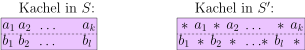
course1/public/img/pcp/mpcp-to-pcp-01.svgwobei * ein neues Symbol ist. Offensichtlich kann keine./course1/wly/08/07-Post-correspondence-problem.wly:194:13 solche Kachel ganz links stehen, da ja dann bereits das./course1/wly/08/07-Post-correspondence-problem.wly:195:13 erste Symbol nicht übereinstimmen würde. Für die markierte./course1/wly/08/07-Post-correspondence-problem.wly:196:13 Startkachel erstellen wir eine weitere "gesternte"./course1/wly/08/07-Post-correspondence-problem.wly:197:13 Variante:./course1/wly/08/07-Post-correspondence-problem.wly:198:13
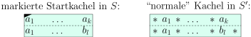
course1/public/img/pcp/mpcp-to-pcp-02.svgDie gesternten Kacheln zwingen uns nun dazu, mit der./course1/wly/08/07-Post-correspondence-problem.wly:205:13 markierten zu beginnen, da diese ja die einzige ist, wo das./course1/wly/08/07-Post-correspondence-problem.wly:206:13 erste Symbol oben und unten übereinstimmt. Wir können nun./course1/wly/08/07-Post-correspondence-problem.wly:207:13 jede ./course1/wly/08/07-Post-correspondence-problem.wly:208:13$S'$./course1/wly/08/07-Post-correspondence-problem.wly:208:18 -Kachelung in eine ./course1/wly/08/07-Post-correspondence-problem.wly:208:22$S$./course1/wly/08/07-Post-correspondence-problem.wly:208:42-Kachelung./course1/wly/08/07-Post-correspondence-problem.wly:208:45 übersetzen;./course1/wly/08/07-Post-correspondence-problem.wly:208:45 allerdings steht bei der ./course1/wly/08/07-Post-correspondence-problem.wly:209:13$S$./course1/wly/08/07-Post-correspondence-problem.wly:209:38-Kachelung./course1/wly/08/07-Post-correspondence-problem.wly:209:41 rechts unten ein *,./course1/wly/08/07-Post-correspondence-problem.wly:209:41 rechts oben aber nicht. Wir erstellen nun eine weitere./course1/wly/08/07-Post-correspondence-problem.wly:210:13 Kachel, die am rechten Rand und nur dort eingesetzt werden./course1/wly/08/07-Post-correspondence-problem.wly:211:13 kann:./course1/wly/08/07-Post-correspondence-problem.wly:212:13
Sie sehen: die letzte Kachel ist die einzige, die am./course1/wly/08/07-Post-correspondence-problem.wly:219:13 rechten Rand stehen kann. Sollte nun das MPCP-Puzzle ./course1/wly/08/07-Post-correspondence-problem.wly:220:13$S$./course1/wly/08/07-Post-correspondence-problem.wly:220:66 ./course1/wly/08/07-Post-correspondence-problem.wly:220:69 eine Lösung haben (die dann laut Spielregeln auch mit der./course1/wly/08/07-Post-correspondence-problem.wly:221:13 markierten Startkachel beginnt), so können wir daraus eine./course1/wly/08/07-Post-correspondence-problem.wly:222:13 Lösung des PCP-Puzzles ./course1/wly/08/07-Post-correspondence-problem.wly:223:13$S'$./course1/wly/08/07-Post-correspondence-problem.wly:223:36 konstruieren, indem wir./course1/wly/08/07-Post-correspondence-problem.wly:223:40 einfach jede ./course1/wly/08/07-Post-correspondence-problem.wly:224:13$S$./course1/wly/08/07-Post-correspondence-problem.wly:224:26 -Kachel durch die entsprechende ./course1/wly/08/07-Post-correspondence-problem.wly:224:29$S'$./course1/wly/08/07-Post-correspondence-problem.wly:224:62 ./course1/wly/08/07-Post-correspondence-problem.wly:224:66 -Kachel ersetzen (Vorsicht: sollte die markierte./course1/wly/08/07-Post-correspondence-problem.wly:225:13 Startkachel in der ./course1/wly/08/07-Post-correspondence-problem.wly:226:13$S$./course1/wly/08/07-Post-correspondence-problem.wly:226:32-Lösung./course1/wly/08/07-Post-correspondence-problem.wly:226:35 mehrfach vorkommen, so muss./course1/wly/08/07-Post-correspondence-problem.wly:226:35 in ./course1/wly/08/07-Post-correspondence-problem.wly:227:13$S'$./course1/wly/08/07-Post-correspondence-problem.wly:227:16 anfangs die "türkise" Version der Kachel genommen./course1/wly/08/07-Post-correspondence-problem.wly:227:20 werden, mit * oben und unten; jedes weitere Exemplar muss./course1/wly/08/07-Post-correspondence-problem.wly:228:13 dann in ./course1/wly/08/07-Post-correspondence-problem.wly:229:13$S'$./course1/wly/08/07-Post-correspondence-problem.wly:229:21 durch die violette türkise Kachel ersetzt./course1/wly/08/07-Post-correspondence-problem.wly:229:25 werden). Ganz zum Schluss hängen wir noch die Kachel für./course1/wly/08/07-Post-correspondence-problem.wly:230:13 den rechten Rand an. Sollte umgekehrt das PCP-Puzzle ./course1/wly/08/07-Post-correspondence-problem.wly:231:13$S'$./course1/wly/08/07-Post-correspondence-problem.wly:231:66 ./course1/wly/08/07-Post-correspondence-problem.wly:231:70 eine Lösung haben, so erhalten wir eine Lösung des MPCP./course1/wly/08/07-Post-correspondence-problem.wly:232:13 Puzzles ./course1/wly/08/07-Post-correspondence-problem.wly:233:13$S$./course1/wly/08/07-Post-correspondence-problem.wly:233:21,./course1/wly/08/07-Post-correspondence-problem.wly:233:24 indem wir alle Sterne herausstreichen und die./course1/wly/08/07-Post-correspondence-problem.wly:233:24 rechte Endkachel entfernen../course1/wly/08/07-Post-correspondence-problem.wly:234:13A\(\square\)
Nun wissen wir also, dass wir den "Spieler" zwingen./course1/wly/08/07-Post-correspondence-problem.wly:236:9 können, mit einer bestimmten Kachel zu beginnen, ohne dies./course1/wly/08/07-Post-correspondence-problem.wly:237:9 explizit in die Spielregeln aufnehmen zu müssen. Unser Ziel./course1/wly/08/07-Post-correspondence-problem.wly:238:9 ist nun: gegeben eine Turingmaschine ./course1/wly/08/07-Post-correspondence-problem.wly:239:9$M$./course1/wly/08/07-Post-correspondence-problem.wly:239:46 und ein Inputwort./course1/wly/08/07-Post-correspondence-problem.wly:239:49 ./course1/wly/08/07-Post-correspondence-problem.wly:240:9$x$./course1/wly/08/07-Post-correspondence-problem.wly:240:9,./course1/wly/08/07-Post-correspondence-problem.wly:240:12 darauf aufbauend ein MPCP-Puzzle ./course1/wly/08/07-Post-correspondence-problem.wly:240:12$S$./course1/wly/08/07-Post-correspondence-problem.wly:240:47 zu konstruieren,./course1/wly/08/07-Post-correspondence-problem.wly:240:50 das genau dann eine Lösung hat, wenn./course1/wly/08/07-Post-correspondence-problem.wly:241:9 ./course1/wly/08/07-Post-correspondence-problem.wly:242:9$M(x) = \texttt{accept}$./course1/wly/08/07-Post-correspondence-problem.wly:242:9 gilt. Erinneren wir uns: eine./course1/wly/08/07-Post-correspondence-problem.wly:242:33 ./course1/wly/08/07-Post-correspondence-problem.wly:243:9Konfiguration./course1/wly/08/07-Post-correspondence-problem.wly:243:10 einer Turingmaschine ist eine Folge./course1/wly/08/07-Post-correspondence-problem.wly:243:24
mit ./course1/wly/08/07-Post-correspondence-problem.wly:249:9$w_i \in \Gamma$./course1/wly/08/07-Post-correspondence-problem.wly:249:13 und ./course1/wly/08/07-Post-correspondence-problem.wly:249:29$q \in Q$./course1/wly/08/07-Post-correspondence-problem.wly:249:34../course1/wly/08/07-Post-correspondence-problem.wly:249:43 Die Bedeutung ist,./course1/wly/08/07-Post-correspondence-problem.wly:249:43 dass auf dem Band das Wort ./course1/wly/08/07-Post-correspondence-problem.wly:250:9$w_1 w_2 \dots w_m$./course1/wly/08/07-Post-correspondence-problem.wly:250:36 steht, die./course1/wly/08/07-Post-correspondence-problem.wly:250:55 Turingmaschine im Zustand ./course1/wly/08/07-Post-correspondence-problem.wly:251:9$q$./course1/wly/08/07-Post-correspondence-problem.wly:251:35 ist und der./course1/wly/08/07-Post-correspondence-problem.wly:251:38 Schreib-Lese-Kopf über den Zeichen ./course1/wly/08/07-Post-correspondence-problem.wly:252:9$w_j$./course1/wly/08/07-Post-correspondence-problem.wly:252:44 steht. Wir./course1/wly/08/07-Post-correspondence-problem.wly:252:49 schreiben also den Zustand unmittelbar ./course1/wly/08/07-Post-correspondence-problem.wly:253:9links./course1/wly/08/07-Post-correspondence-problem.wly:253:49 von dem./course1/wly/08/07-Post-correspondence-problem.wly:253:55 Zeichen, über dem er steht. Wenn das Eingabewort./course1/wly/08/07-Post-correspondence-problem.wly:254:9 ./course1/wly/08/07-Post-correspondence-problem.wly:255:9$x_1 \dots x_n$./course1/wly/08/07-Post-correspondence-problem.wly:255:9 und ./course1/wly/08/07-Post-correspondence-problem.wly:255:24$q_0 \in Q$./course1/wly/08/07-Post-correspondence-problem.wly:255:29 der Startzustand, dann ist./course1/wly/08/07-Post-correspondence-problem.wly:255:40
die Startkonfiguration. Die Berechnung einer./course1/wly/08/07-Post-correspondence-problem.wly:261:9 Turingmaschine ist nun eine Folge von Konfigurationen, die./course1/wly/08/07-Post-correspondence-problem.wly:262:9 wir mit dem ./course1/wly/08/07-Post-correspondence-problem.wly:263:9$\#$./course1/wly/08/07-Post-correspondence-problem.wly:263:21 -Zeichen separieren, also./course1/wly/08/07-Post-correspondence-problem.wly:263:25
Zwei aufeinanderfolgende Konfigurationen ./course1/wly/08/07-Post-correspondence-problem.wly:269:9$C_i, C_{i+1}$./course1/wly/08/07-Post-correspondence-problem.wly:269:50 ./course1/wly/08/07-Post-correspondence-problem.wly:269:64 unterscheiden sich nur in der unmittelbaren Umgebung des./course1/wly/08/07-Post-correspondence-problem.wly:270:9 Schreib-Lese-Kopfes. Der Rest ist in beiden Konfigurationen./course1/wly/08/07-Post-correspondence-problem.wly:271:9 identisch. Die Idee ist nun, zuerst eine Startkachel./course1/wly/08/07-Post-correspondence-problem.wly:272:9
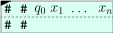
course1/public/img/pcp/halt-to-pcp-01.svgzu bauen. Wir sehen: oben "steht etwas über", und zwar./course1/wly/08/07-Post-correspondence-problem.wly:279:9 genau die Startkonfiguration. Wir wollen nun weitere./course1/wly/08/07-Post-correspondence-problem.wly:280:9 Kacheln entwerfen, die es dem Spieler erlauben, unten auch./course1/wly/08/07-Post-correspondence-problem.wly:281:9 die Konfiguration zu legen, ihn dabei allerdings zwingen,./course1/wly/08/07-Post-correspondence-problem.wly:282:9 oben die Folgekonfiguration zu legen. Hierfür brauchen wir./course1/wly/08/07-Post-correspondence-problem.wly:283:9 "Kopierkacheln", die es uns erlauben, Zeichen in die./course1/wly/08/07-Post-correspondence-problem.wly:284:9 Folgekonfiguration zu kopieren und "Kopf-Kacheln", die die./course1/wly/08/07-Post-correspondence-problem.wly:285:9 Aktion am Schreib-Lese-Kopf simulieren../course1/wly/08/07-Post-correspondence-problem.wly:286:9
ist, dann würden wir folgende Kachel erzeugen und wie./course1/wly/08/07-Post-correspondence-problem.wly:292:9 folgt einsetzen:./course1/wly/08/07-Post-correspondence-problem.wly:293:9
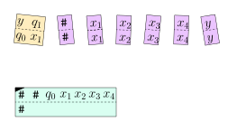
course1/public/img/pcp/step-right/01.svg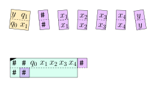
course1/public/img/pcp/step-right/02.svg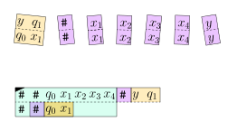
course1/public/img/pcp/step-right/03.svg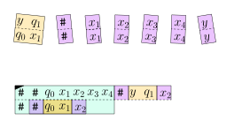
course1/public/img/pcp/step-right/04.svg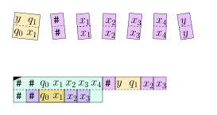
course1/public/img/pcp/step-right/05.svg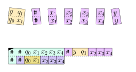
course1/public/img/pcp/step-right/06.svg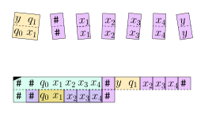
course1/public/img/pcp/step-right/07.svg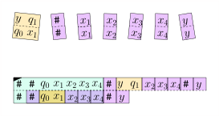
course1/public/img/pcp/step-right/08.svgWas geschieht nun? Für das Symbol ./course1/wly/08/07-Post-correspondence-problem.wly:306:9$q_1$./course1/wly/08/07-Post-correspondence-problem.wly:306:43,./course1/wly/08/07-Post-correspondence-problem.wly:306:48 das ja einen./course1/wly/08/07-Post-correspondence-problem.wly:306:48 Zustand bezeichnet, gibt es keine Kopierkachel. Wenn nun./course1/wly/08/07-Post-correspondence-problem.wly:307:9 beispielsweise./course1/wly/08/07-Post-correspondence-problem.wly:308:9
gilt, dann müssten wir den Kopf wieder nach links./course1/wly/08/07-Post-correspondence-problem.wly:314:9 verschieben, und er würde wiederum ganz am Anfang der./course1/wly/08/07-Post-correspondence-problem.wly:315:9 Konfiguration stehen. Es war also ein Fehler, ./course1/wly/08/07-Post-correspondence-problem.wly:316:9$y$./course1/wly/08/07-Post-correspondence-problem.wly:316:55 per./course1/wly/08/07-Post-correspondence-problem.wly:316:58 Kopierkachel zu kopieren. Wir machen es rückgängig und./course1/wly/08/07-Post-correspondence-problem.wly:317:9 legen eine der Regel./course1/wly/08/07-Post-correspondence-problem.wly:318:9 ./course1/wly/08/07-Post-correspondence-problem.wly:319:9$\delta(q_1, x_2) = (q_3, z, \texttt{L})$./course1/wly/08/07-Post-correspondence-problem.wly:319:9 entsprechende./course1/wly/08/07-Post-correspondence-problem.wly:319:50 Kopfkachel:./course1/wly/08/07-Post-correspondence-problem.wly:320:9
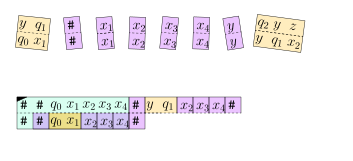
course1/public/img/pcp/step-left/01.svg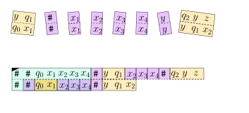
course1/public/img/pcp/step-left/02.svg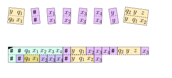
course1/public/img/pcp/step-left/03.svg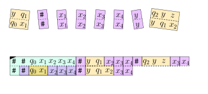
course1/public/img/pcp/step-left/04.svg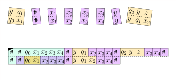
course1/public/img/pcp/step-left/05.svgHier brauchen wir halt eine Kopfkachel ./course1/wly/08/07-Post-correspondence-problem.wly:330:9$(q_2yz:yq_1x_2)$./course1/wly/08/07-Post-correspondence-problem.wly:330:48 ./course1/wly/08/07-Post-correspondence-problem.wly:330:65 für ./course1/wly/08/07-Post-correspondence-problem.wly:331:9jedes./course1/wly/08/07-Post-correspondence-problem.wly:331:14 Bandsymbol ./course1/wly/08/07-Post-correspondence-problem.wly:331:20$y$./course1/wly/08/07-Post-correspondence-problem.wly:331:32,./course1/wly/08/07-Post-correspondence-problem.wly:331:35 da die Regel immer anzuwenden./course1/wly/08/07-Post-correspondence-problem.wly:331:35 ist, egal, welches Symbol ./course1/wly/08/07-Post-correspondence-problem.wly:332:9$y$./course1/wly/08/07-Post-correspondence-problem.wly:332:35 links vom Schreib-Lese-Kopf./course1/wly/08/07-Post-correspondence-problem.wly:332:38 steht. Fassen wir zusammen, was wir bis jetzt gesehen./course1/wly/08/07-Post-correspondence-problem.wly:333:9 haben. Wir konstruieren Kopierkacheln ./course1/wly/08/07-Post-correspondence-problem.wly:334:9$(x:x)$./course1/wly/08/07-Post-correspondence-problem.wly:334:47,./course1/wly/08/07-Post-correspondence-problem.wly:334:54 die es dem./course1/wly/08/07-Post-correspondence-problem.wly:334:54 Spieler erlauben, die Konfiguration zu kopieren;./course1/wly/08/07-Post-correspondence-problem.wly:335:9 Kopfkacheln, die den Spieler zwingen, in der Umgebung des./course1/wly/08/07-Post-correspondence-problem.wly:336:9 Schreib-Lese-Kopfes den Regeln der Turingmaschine zu./course1/wly/08/07-Post-correspondence-problem.wly:337:9 folgen; und eine Startkachel, die die Startkonfiguration./course1/wly/08/07-Post-correspondence-problem.wly:338:9 abbildet. Also:./course1/wly/08/07-Post-correspondence-problem.wly:339:9
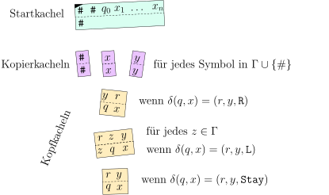
course1/public/img/pcp/almost-all-tiles.svgWir sind noch nicht ganz fertig. Wir brauchen noch Regeln./course1/wly/08/07-Post-correspondence-problem.wly:346:9 für den Fall, dass der Schreib-Lese-Kopf am Rand des./course1/wly/08/07-Post-correspondence-problem.wly:347:9 Bandinhaltes steht, konkret also die "Umgebung" des Kopfes./course1/wly/08/07-Post-correspondence-problem.wly:348:9 ein ./course1/wly/08/07-Post-correspondence-problem.wly:349:9$\texttt{#}$./course1/wly/08/07-Post-correspondence-problem.wly:349:13 -Zeichen beinhaltet. Wir können entweder./course1/wly/08/07-Post-correspondence-problem.wly:349:25 weitere Kopf-Kacheln entwerfen, die diese Fälle behandeln,./course1/wly/08/07-Post-correspondence-problem.wly:350:9 oder aber "Bandwrweiterungskacheln", die uns erlauben, der./course1/wly/08/07-Post-correspondence-problem.wly:351:9 Konfiguration ./course1/wly/08/07-Post-correspondence-problem.wly:352:9$C$./course1/wly/08/07-Post-correspondence-problem.wly:352:23 links oder rechts ein Leersymbol ./course1/wly/08/07-Post-correspondence-problem.wly:352:26$\_$./course1/wly/08/07-Post-correspondence-problem.wly:352:60 ./course1/wly/08/07-Post-correspondence-problem.wly:352:64 anzuhängen. Ich überlasse es an dieser Stelle dem Leser /./course1/wly/08/07-Post-correspondence-problem.wly:353:9 der Leserin, die Details hierfür auszuarbeiten. Ganz zum./course1/wly/08/07-Post-correspondence-problem.wly:354:9 Schluss müssen wir noch beschreiben, was geschieht, wenn./course1/wly/08/07-Post-correspondence-problem.wly:355:9 die Maschine in den akzeptierenden Zustand ./course1/wly/08/07-Post-correspondence-problem.wly:356:9$q^*$./course1/wly/08/07-Post-correspondence-problem.wly:356:52 wechselt../course1/wly/08/07-Post-correspondence-problem.wly:356:57 Wir erschaffen Kacheln, die erlauben, alle Bandsymbole zu./course1/wly/08/07-Post-correspondence-problem.wly:357:9 löschen, bis das Band leer ist:./course1/wly/08/07-Post-correspondence-problem.wly:358:9
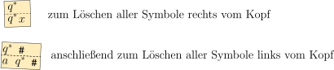
course1/public/img/pcp/tile-delete-symbols.svgund ganz am Schluss eine Kachel ./course1/wly/08/07-Post-correspondence-problem.wly:365:9$(\# : q^* \# \#)$./course1/wly/08/07-Post-correspondence-problem.wly:365:41 , um./course1/wly/08/07-Post-correspondence-problem.wly:365:59 alles abzuschließen. Die letzten zwei Schritte sehen dann./course1/wly/08/07-Post-correspondence-problem.wly:366:9 so aus:./course1/wly/08/07-Post-correspondence-problem.wly:367:9
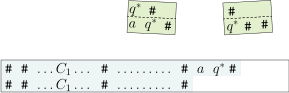
course1/public/img/pcp/finish-00.svg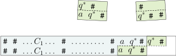
course1/public/img/pcp/finish-01.svg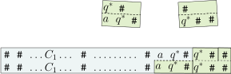
course1/public/img/pcp/finish-03.svgStrenggenommen müssten wir jetzt beweisen, dass das./course1/wly/08/07-Post-correspondence-problem.wly:375:9 MPCP-Puzzle genau dann lösbar ist, wenn die Turingmaschine./course1/wly/08/07-Post-correspondence-problem.wly:376:9 akzeptiert. Hierfür könnten wir zum Beispiel zeigen, dass,./course1/wly/08/07-Post-correspondence-problem.wly:377:9 wenn ./course1/wly/08/07-Post-correspondence-problem.wly:378:9$s$./course1/wly/08/07-Post-correspondence-problem.wly:378:14 eine Kachelung ist, in welcher ./course1/wly/08/07-Post-correspondence-problem.wly:378:17$\top(s)$./course1/wly/08/07-Post-correspondence-problem.wly:378:49 und./course1/wly/08/07-Post-correspondence-problem.wly:378:58 ./course1/wly/08/07-Post-correspondence-problem.wly:379:9$\bottom(s)$./course1/wly/08/07-Post-correspondence-problem.wly:379:9 beide auf dem Zeichen ./course1/wly/08/07-Post-correspondence-problem.wly:379:21$\#$./course1/wly/08/07-Post-correspondence-problem.wly:379:44 enden und wenn./course1/wly/08/07-Post-correspondence-problem.wly:379:48 ./course1/wly/08/07-Post-correspondence-problem.wly:380:9$\bottom(s)$./course1/wly/08/07-Post-correspondence-problem.wly:380:9 nicht das Zeichen ./course1/wly/08/07-Post-correspondence-problem.wly:380:21$q^*$./course1/wly/08/07-Post-correspondence-problem.wly:380:40 enthält, dann ist./course1/wly/08/07-Post-correspondence-problem.wly:380:45
wobei ./course1/wly/08/07-Post-correspondence-problem.wly:387:9$C_0 = q_0 x_1 \dots x_n$./course1/wly/08/07-Post-correspondence-problem.wly:387:15 die Startkonfiguration der./course1/wly/08/07-Post-correspondence-problem.wly:387:40 Turingmaschine ist und jedes ./course1/wly/08/07-Post-correspondence-problem.wly:388:9$C_{i+1}$./course1/wly/08/07-Post-correspondence-problem.wly:388:38 die./course1/wly/08/07-Post-correspondence-problem.wly:388:47 Folgekonfiguration von ./course1/wly/08/07-Post-correspondence-problem.wly:389:9$C_i$./course1/wly/08/07-Post-correspondence-problem.wly:389:32;./course1/wly/08/07-Post-correspondence-problem.wly:389:37 dass also die Teillösung ./course1/wly/08/07-Post-correspondence-problem.wly:389:37$s$./course1/wly/08/07-Post-correspondence-problem.wly:389:64 ./course1/wly/08/07-Post-correspondence-problem.wly:389:67 des Puzzles getreu die Berechnung der Turingmaschine./course1/wly/08/07-Post-correspondence-problem.wly:390:9 abbildet. Wir ersparen uns weitere Details../course1/wly/08/07-Post-correspondence-problem.wly:391:9A\(\square\)